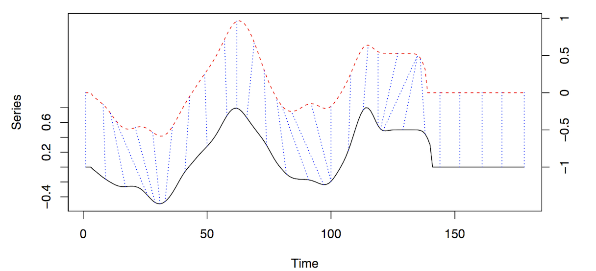

Time Series
Misc
- Also see EDA, Time Series >> Association
- {tseriesEntropy} - Implements an Entropy measure of dependence based on the Bhattacharya-Hellinger-Matusita distance.
Srho.test- Entropy Test For Serial And Cross Dependence For Categorical SequencesSrho.ts- Entropy based measure of serial and cross dependence for continuous data. Implements a normalized version of the Hellinger/Matusita distance
Cross-Correlation Function (CCF)
The correlation between two stationary series. The cross-correlation function (CCF) helps you determine which lags of time series \(X\) predicts the value of time series \(Y\).
For a set of sample correlations between \(x_{t+h}\) and \(y_t\) for \(h = 0, \pm1, \pm2, \pm3, \ldots\), a negative value for \(h\) is a correlation between \(x\) at a time before \(t\) (i.e. lag) and \(y\) at time \(t\).
- For instance, consider \(h = −2\). The CCF value would give the correlation between \(x_{t−2}\) and \(y_t\).
Misc
- Packages
- {ebtools::prewhitened_ccf}
- {forecast::ggCcf} - You have to manually prewhiten series before using this function.
- {feasts::CCF} - You have to manually prewhiten series before using this function. Data needs to be a tsibble.
- When calculating correlations between lags of a variable and the variable itself (ACF) or another variable (CCF) you can NOT simply take corr(xt-k, yt) for the correlation of x at lag k and y and repeat for all the lags of x.
- The correlation formula/function requires the mean of the series, you would be using a different mean for xk for each calculation of the correlation of each pair. The assumption is that the series are (second-order?) stationary and therefore have a constant mean (i.e. each series has 1 mean (and variance)), so the mean(s) of (each) original series should be used in the calculations of the correlations.
- Source: Modern Applied Statistics with S, Venables and Ripley
- Compared one against the other in COVID-19 CFR project and they actually produce similar patterns but different values of the CCF. The simple correlation method produced inflated CCF values.
- Packages
Terms
- Input and Output Series - In a cross-correlation in which the direction of influence between two time-series is hypothesized or known,
- The influential time-series is called the “input” time-series
- The affected time-series is called the “output” time-series.
- Lead - When one or more \(x_{t+h}\) , with \(h\) negative, are predictors of \(y_t\), it is sometimes said that x leads y.
- Lag - When one or more \(x_{t+h}\), with \(h\) positive, are predictors of \(y_t\), it is sometimes said that x lags y.
- Input and Output Series - In a cross-correlation in which the direction of influence between two time-series is hypothesized or known,
Prewhitening
- If either series contain autocorrelation, or the two series share common trends, it is difficult for the CCF to identify meaningful relationships between the two time series. Pre-whitening solves this problem by removing the autocorrelation and trends.
- Helps to avoid spurious correlations
- Make sure there’s a theoretical reason for the two series to be related
- Autocorrelation of at least one series should be removed (transformed to white noise)
- With autocorrelation present:
- The variance of cross-correlation coefficient is high and therefore spurious correlations are likely
- Significance calculations are no longer valid since the CCF distribution will not be normal and the variance is no longer 1/n
- With autocorrelation present:
- A problem even with stationary series (even more so with non-stationary series)
- We expect about 1.75 false alarms out of the 35 sample cross-correlations even after prewhitening
Steps
- Test for stationarity
- Find number of differences to make the series stationary
- Not sure if each series should be differenced the same number of times
- Why would you test a seasonal series and non-seasonal series for an association?
- The requirement is stationarity, so maybe try using the highest difference needed between both series
- In dynamic regression, Hyndman says difference all variables if one needs differencing, so proabably applicable here.
- Some examples also used log transformation , but when I did, it produced nonsensical CCF values. (covid cfr project). So, beware.
- Not sure if each series should be differenced the same number of times
- Seasonal Difference before differencing for trend
- (Optional) Create lag scatter plots of the differenced series and look for patterns to get an idea of the strength of the linear correlation (See EDA, Time Series >> Association)
- If there’s a nonlinear pattern, might be difficult or might not to use a nonlinear or nonparametric correlation function. See 3rd bullet under CCF header above for discussion of stationarity assumption. May not be necessary with another correlation type.
- Prewhiten both series (cryer, chan method)
- Apply correlation function
Example COVID-19 CFR project
# Number of differences ind_cases_diff <- forecast::ndiffs(ind_cases_ts) ind_deaths_diff <- forecast::ndiffs(ind_deaths_ts) # Number of seasonal differences ind_cases_sdiff <- forecast::nsdiffs(ind_cases_ts) ind_deaths_sdiff <- forecast::nsdiffs(ind_deaths_ts) # Only detrending differences; No seasonal diffs needed ind_cases_proc <- diff(ind_cases_ts, ind_cases_diff) ind_deaths_proc <- diff(ind_deaths_ts, ind_deaths_diff) # Fit AR model with processed input series ind_cases_ar <- ind_cases_proc %>% ts_tsibble() %>% model(AR(value ~ order(p = 1:30), ic = "aicc")) # Pull AR coefs ind_ar <- coef(ind_cases_ar) %>% filter(stringr::str_detect(term, "ar")) %>% pull(estimate) # Linearly filter both input and output series using coefs ind_cases_fil <- stats::filter(ind_cases_proc, filter = c(1, -ind_ar), method = 'convolution', sides = 1) ind_deaths_fil <- stats::filter(ind_deaths_proc, filter = c(1, -ind_ar), method = 'convolution', sides = 1) # spike at -20 with corr = 0.26; nonsensical lags at -4 and -15, -68 ggCcf(ind_cases_fil, ind_deaths_fil)
Distances
- The smaller the total distance between two series, the greater the association.
- Distance algorithms in the {dtw} and {dtwclust} packages
- Other packages
- {distantia} - Qantifies dissimilarity between multivariate ecological time-series (METS)
- {IncDTW} - Fast DTW in C++; Incremental Calculation of Dynamic Time Warping
- Incremental calculation of DTW (reduces runtime complexity to a linear level for updating the DTW distance)
- Vector-based implementation of DTW which is faster because no matrices are allocated (reduces the space complexity from a quadratic to a linear level in the number of observations)
- Subsequence matching algorithm runDTW efficiently finds the k-NN to a query pattern in a long time series
- Also see Clustering, Time Series >> {dtwclust}
Dynamic Time Warping Distance (DTW)
dtw_basic,dtw2- The distance between 2 series is measured by “warping” the time axis to bring them as close as possible to each other and measuring the sum of the distances between the points.
- Figure shows alignment of two series, x and y.
- The initial and final points of the series must match, but other points along the axis may be “warped” in order to minimize the “cost” (i.e. weighted distance).
- The dashed blue lines are the warp curves and show how points are mapped to each other.
- Figure shows alignment of two series, x and y.
- Hyperparameters:
- Step Pattern - Determines how the algorithm traverses the rows of the LCM to find the optimal path (See Step Patterns Section)
- Window Range - Limits the number lcm calculations for each point (See Window Constraint Section)
- Steps
- Calculate LCM matrix for series X and Y where X is the Query or Test Series and Y is the Reference Series. The LCM is a distance matrix where each element is the distance between the ith point of series 1 and the jth point of series 2. (See Local Cost Matrix (LCM) for details)
- Simultaneously move along each row of the LCM using a chosen step pattern within a chosen window (See Step Patterns and Window Constraints sections to get a visual of this process).
The minimum lcm for each point along x-axis is found. The sequence of minimum lcms or minimum alignment is \(\phi\) .
Calculate the cost, DTWp, using the LCMs in the minimum alignment
\[ \text{DTW}_p(x, y) = \left(\sum\frac{m_\phi \text{lcm}(k)^p}{M_\phi}\right)^{1/p} \]
- \(m_\phi\): Per-step weighting coefficient (edge weight in patterns fig)
- \(M_\phi\): Normalization constant
- \(k\): Pair of points (or position along the x-axis) in the minimum alignment
dtw_basicsets \(p = 2\)- The
dtwfunction in the dtw package doesn’t use p in this equation
- The
- Choose the alignment with the lowest cost, \(\text{DTW}_p\) (i.e. sum of lcm distances for that alignment)
{kind=link}
Local Cost Matrix (LCM)
Computed for each pair of series that are compared
The \(L_p\) norm (i.e. distance) between the query series and reference series
\[ \text{lcm}(i, j) = \left(\sum_v | x_i^v - y_j^v|^p\right)^{1/p} \]
- \(x_i\) and \(y_j\) are elements of the test and reference time series respectively
- \(v\) stands for “variable” which is for comparing multivariate series
- i.e. the \(L_p\) norm for each pair of points is summed over all variables in the multivariate series.
- \(p\) is the order of the norm used
- e.g. 1 is Manhattan distance; 2 is Euclidean
- Choice of \(p\) only matters if multivariate series are being used
Each \(\text{lcm}(i , j)\) value is an element in the \(n \times m\) matrix, \(\text{LCM}\) where \(1 \lt i \lt n\) and \(1 \lt j \lt m\)
Step Patterns
- Determines how algorithm moves across the rows of the LCM to create alignments (warpings of the time axis)
- Each pattern is a set of rules and weights
- The rules are used to create different alignments of the LCM (i.e warping of the time axis)
- The edge weights, \(m_\phi\), are used in the DTW calculation
- Patterns

- Patterns in fig
- Top Row: symmetric1, symmetric2
- Bottom Row: asymmetric, rabinerJuangStepPattern(4, “c”, TRUE)
- i.e. Rabiner-Juang’s type IV with slope weighting
- Only some of the patterns are normalizable (i.e. \(M_\phi\) is used in the DTW equation) (normalize argument)
- Normalization may be important when
- Comparing alignments between time series of different lengths, to decide the best match (e.g., for classification)
- When performing partial matches (?)
- For
dtw_basic, doc says only supported with symmetric2 - rabinerJuangStepPattern with slope weighting types c and d are normalizable
- symmetricP* (where * is a number) are all normalizable (not shown in fig)
- Normalization may be important when
- Symmetric (i.e. dist from A to B equals the distance from B to A) only if:
- Either symmetric1 or symmetric2 step patterns are used
- Series are equal length after any constraints are used
- Some Cluster Validity Indicies (CVI) (See Clustering, Time Series >> Cluster Validity Indicies) require symmetric distance functions
- {dtwclust} author says symmetric1 most commonly used.
dtw::dtw_basicuses symmetric2 by default.
- Patterns in fig
Window Constraints
- Limits the region that the lcm calculation takes place.
- Reduces computation time but makes sense that you don’t want to compare points that are separated by to large a time interval
- Sakoe-Chiba window creates a calculation region along the diagonal (yellow blocks) of the LCM
.png)
- 1 set of lcm calculations occurs within the horizontal, rectangular block of the query series and the vertical, rectangular block of the reference series.
- Therefore, pairs are chosen in relatively small neighbors around the ith point of series 1 and the ith point of series 2, and the window size is size of the neighborhood.
- Sakoe-Chiba requires equal length series, but a “slanted band” is equivalent and works for unequal length series.
- “Slanted Band” is what’s used by dtwclust when the window constraint is used.
- Optimal window size needs to be tuned
- Can marginally speed up the DTW calculation, but they are mainly used to avoid pathological warping
- \(w\), the window size, is around half the size of the actual region covered
- \([(i, j - w), (i, j + w)]\) which has \(2w + 1\) elements
- A common w is 10% of the sample size, smaller sizes sometimes produce better results
Lower Bounds (LB)
dtw_lb- Uses a lower bound the dtw distance to speed up computation
- A considerably large dataset would be needed before the overhead of DTW becomes much larger than that of dtw_lb’s iterations
- May only be useful if one is only interested in nearest neighbors, which is usually the case in partitional clustering
- Steps
- Calculates an initial estimate of a distance matrix between two sets of time series using
lb_improved- Involves the “lower bound” calculation (Didn’t get into it)
- Uses the estimate to calculate the corresponding true DTW distance between only the nearest neighbors (row-wise minima of dist.matrix) of each series in \(x\) found in $y
- Updates distance matrix with DTW values
- Continues iteratively until no changes in the nearest neighbors occur
- Calculates an initial estimate of a distance matrix between two sets of time series using
- Only if dataset is very large will this method will be faster than
dtw_basicin the calculation of DTW - Not symmetric, no multivariate series
- Requires
- Both series to be equal length
- Window constraint defined
- Norm defined
- Value of LB (tightness of envelope around series) affected by step pattern which is set in
dtw_basicand included via … indtw_lb- Size of envelopes in general: LB_Keoghp < LB_Improvedp < DTWp
Soft DTW
sdtw- “Regularizes DTW by smoothing it” (¯\_(ツ)_/¯)
- “smoothness” controlled by gamma
- Default: 0.01
- With lower values resulting in less smoothing
- “smoothness” controlled by gamma
- Uses a gradient to efficiently calculate cluster prototypes
- Not recommended for stand-alone distance calculations
- Negative values can happen
- Symmetric and handles series of different lengths and multivariate series
Shape-based Distance (SBD)
\[ \text{SBD} (x,y) = 1-\frac{\max{\text{NCC}_c (x,y)}}{\lVert x \rVert_2 \lVert y \rVert_2} \]
SBD- Used in k-Shape Clustering
- Based on the cross-correlation with coefficient normalization (NCCc) sequence between two series
- Fast (uses FFT to calc), competitive with other distance algorithms, and supports series with different lengths
- Symmetric, no multivariate series
- In preprocessing argument, set to z-normalization
Triangular Global Alignment Kernel Distance
\[ \begin{aligned} &\text{TGAK}(x,y,\sigma,T) = \frac{\omega(i,j)\kappa(x,y)}{2-\omega(i,j)\kappa(x,y)} \\ &\begin{aligned} \text{where}\quad &\omega(i,j) = \left(1-\frac{|i-j|}{T}\right)_+ \\ &\kappa(x,y)= e^{-\phi_\sigma(x,y)} \\ &\phi_\sigma(x,y) = \frac{1}{2\sigma^2}\lVert x-y \rVert^2 + \log \left(2-e^{-\frac{\lVert x-y \rVert^2}{2\sigma^2}}\right) \end{aligned} \end{aligned} \]
GAK- “Regularizes DTW by smoothing it” (¯\_(ツ)_/¯)
- Symmetric when normalized (dist a to b = dist b to a)
- Supports multivariate series and series of different length (as long as one series isn’t half the length of the other)
- Slightly more computationally expensive than DTW (… that equation🥴)
- \(\sigma\) can defined by the user but if left as NULL, the function estimates it
- \(T\) is the triangular constraint and is similar to the window constraint in DTW but there no argument for it, so I guess it’s taken care of
- No idea what \(i\) and \(j\) refer to since x and y are also used.
- Would have to look it up in the original paper or there is a separate website and package for it
- If normalize = TRUE, then a distance is returned, can be compared with the other distance measure, and used in clustering
- If FALSE, a similarity is returned